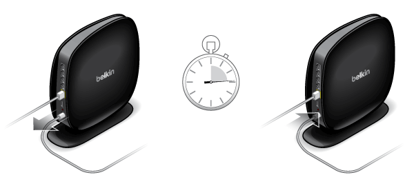

Need Help?
Have a question or need some support? You can get 24-hour help in our online help center.
Belkin Help Center →
Copyright © 2012. Belkin, All Rights Reserved.
Please enter your password:
Please enter a password to lock the dashboard:
Enjoy personal music, photos, and videos conveniently through any DLNA device connected to your network. Powered by Twonky.
Twonky is a line of digital home software products created by PacketVideo Corporation (PV).
We're applying your changes and rebooting the router to make it official.
We're waiting for the router to reconnect. Once that happens we'll proceed.
We need a wireless connection to the router to continue.
You'll be connected to the router, and we'll proceed.
Waiting for the router to reconnect.
We need a wireless connection to the router to continue.
You'll be connected to the router, and we'll proceed.
Waiting for you to reconnect.
This happens sometimes and is pretty easy to fix.
Your device provides a menu of available wireless networks in the Settings app.
Your computer provides a menu of available wireless networks at the right end of the menu bar.
Your device provides a menu of available wireless networks in the Settings app.
Your computer provides a menu of available wireless networks at the right end of the task bar.
Your computer provides a menu of available wireless networks at the right end of the task bar.
If you have an internet enabled device around, go to this URL for helpful information: http://belk.in/PMuxOg
If this doesn't work, plug the Ethernet cable directly between your modem and computer.
Once we see a connection we'll proceed automatically.
Unplug your router's power supply, wait a few seconds, and plug it back in.
Unplug your router's power supply, wait a few seconds, and plug it back in.
Once your router is showing a solid blue light we are ready to connect.
Your device provides a menu of available wireless networks in the Settings app.
Your computer provides a menu of available wireless networks towards the right end of the menu bar.
Your device provides a menu of available wireless networks in the Settings app.
Your computer provides a menu of available wireless networks at the right end of the task bar.
Your computer provides a menu of available wireless networks at the right end of the task bar.
It'll take a few seconds to establish the connection, then you'll be ready to try again.
Consider plugging a computer into the router. Use an Ethernet cable between the computer and one of the grey ports on the router. Visiting http://router/ from there will let you try setting up again.
Once you've done these steps click Try again.
Go to http://belk.in/PMuxOg on a device connected to the Internet
In these situations it is difficult to tell if your router needs to restart or we just need to re-establish a connection to it. So we've included instructions for both of these. Since we changed your network password in a previous step, you may need to re-select the network once you've re-started the router.
Unplug your router's power supply, wait a few seconds, and plug it back in.
Unplug your router, wait a few seconds, and plug it back in.
Once your router is showing a solid blue light we are ready to connect.
Your device provides a menu of available wireless networks in the Settings app.
Your computer provides a menu of available wireless networks towards the right end of the menu bar.
Your device provides a menu of available wireless networks in the Settings app.
Your computer provides a menu of available wireless networks at the right end of the task bar.
Your computer provides a menu of available wireless networks at the right end of the task bar.
It'll take a few seconds to establish the connection, then you'll be ready to try again.
You could plug a computer into the router. Plug an Ethernet cable between the computer and one of the grey ports on the router. Visiting http://router/ from there will let you try setting up again.
Once you've done these steps click Try again.
Go to http://belk.in/PMuxOg on a device connected to the Internet
In these situations it is difficult to tell if your router needs to restart or we just need to re-establish a connection to it. So we've included instructions for both of these. Since we changed your network name in a previous step, please make sure to connect to the new network once you've re-started the router.
If you need support and have a connected device, visit help.belkin.com.
Have a question or need some support? You can get 24-hour help in our online help center.
Belkin Help Center →